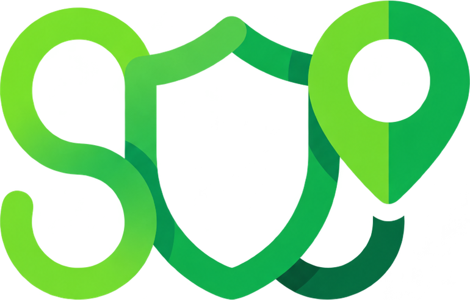
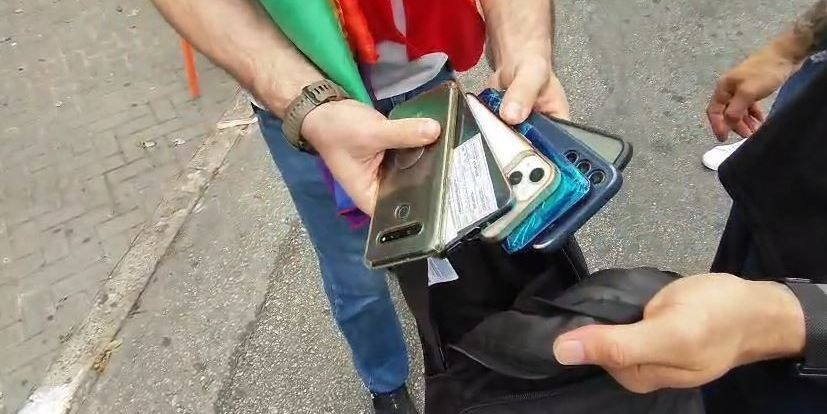

01
Informe seu trajeto
Escolha origem e destino em São Paulo.

safejy+ 01 / O GANCHO
O GPS mostra o caminho mais rápido. A SAFEJY mostra se ele passa por áreas de risco antes de você sair.

02 / O PROBLEMA E OS DADOS
Apps comuns calculam apenas trânsito. A SAFEJY cruza o trajeto com dados públicos de segurança.

Mesmo com recuo de 9,05% nos índices de 2025, os registros seguem concentrados em pontos específicos.
Ver estudo ↗Ocorrências registradas entre janeiro e abril de 2026 no estado de São Paulo.
Ver fonte ↗Fontes oficiais com data e link direto. Os relatos contextualizam o problema real; o mapa usa simulação ilustrativa.
03 / A SOLUÇÃO EM 3 PASSOS
Simples, visual e antes de você colocar o pé na rua.
Escolha origem e destino em São Paulo.
Identifique trechos com alerta no mapa.
Compare a rota direta com o desvio sugerido.
Trajeto pela Av. 23 de Maio com trecho central de alta concentração de furtos de celular em semáforos (dados SSP/FECAP).
Recomendação: Mantenha vidros fechados e pertences fora de vista.Desvio seguro sugerido através de vias expressas monitoradas com iluminação contínua e maior patrulhamento.
Recomendação: Rota recomendada para circular com tranquilidade.Simulação ilustrativa baseada em relatórios oficiais de segurança pública em São Paulo.
04 / POR QUE A SAFEJY
Orientação de um Guia Local: calma, precisa e sem alarmismo.
Dados oficiais da SSP e FECAP, sem tom policialesco.
Analisamos vias e horários sem rotular moradores.
Nenhuma rota é 100% segura; você decide com clareza.
Português, Inglês e Modo Alto Contraste para daltonismo.
05 / PARA QUEM E MODELO
100% gratuito e de utilidade pública, focado em impacto social.
Chegada por aeroportos (Guarulhos e Congonhas) e passeios.
TURISMO E DESCOBERTAReuniões e eventos em centros como Expo SP e Anhembi.
TRABALHO E DIA A DIADeslocamentos diários por regiões desconhecidas.
MOBILIDADE E DESLOCAMENTO06 / VISÃO E PRÓXIMOS PASSOS
Apresentar à banca e ouvir turistas e motoristas.
Conectar dados abertos da SSP-SP por via e horário.
Projeto acadêmico · 2026. Nenhuma rota garante ausência de risco.